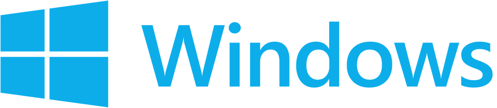

References / Other / 386
Windows 8 logo
Pentagram’s 2012 Windows logo: the waving four-color flag redrawn as a flat, single-color window in perspective.
- Source
- Pentagram: Windows
- Creator
- Pentagram (Paula Scher) for Microsoft
- Made
- 2012
- Style
- Flat design (agent-proposed, not yet reviewed by a person)
- Moods
- Clean, direct, digital
- Evidence
- Inspected a 1920 × 420 render of File:Windows logo and wordmark - 2012–2015.svg and stored a 1600 px copy. Pentagram’s project page read on 2026-09-28; it lists Paula Scher as partner.
- Reviewed
- Rights
- Open license, stored. License: public domain. Rights policy

Context
Pentagram writes that the Windows logo gained “a 3D effect with a gradient” for Windows XP and became a “pearl” for Vista, and that the new logo “reflects the sleek, modern ‘Metro’ design language”.
Pentagram: “One guideline of Metro is that the graphic or interface must appear ‘authentically digital’ – that is, it should not appear to be material or three-dimensional using gradients or effects.” The logo instead “suggests dimensionality using the classic principle of perspective”.
Commons dates the logo to February 2012, with the Windows 8 Consumer Preview.
Observed
- Four panes of one flat light blue form a window seen in perspective: the left panes are shorter and narrower than the right panes.
- A white cross of even width separates the panes.
- The wordmark “Windows” is a plain humanist sans-serif in the same blue, with no effects.
Why it belongs
Measured with tools/image-traits.py; see the measurement file. The logo shows the rule of the style at the scale of a brand mark: depth by drawing (perspective), never by rendering (gradient or shadow).
Compare the gradients and glossy orbs of the Aero era in Windows 7.
Borrow
When a flat mark needs depth, draw it with geometry, such as perspective or overlap, and keep each shape one solid color.
Measured
Machine-extracted by tools/image-traits.py on . Full measurement.
- Mean chroma
- 0.3
- Palette
- #000000 62%
- #0dadea 31%
- #05687f 1%
- #0884b4 1%
- #034b73 1%
- #00252d 1%
- #00131d 1%
- #06729a 1%

